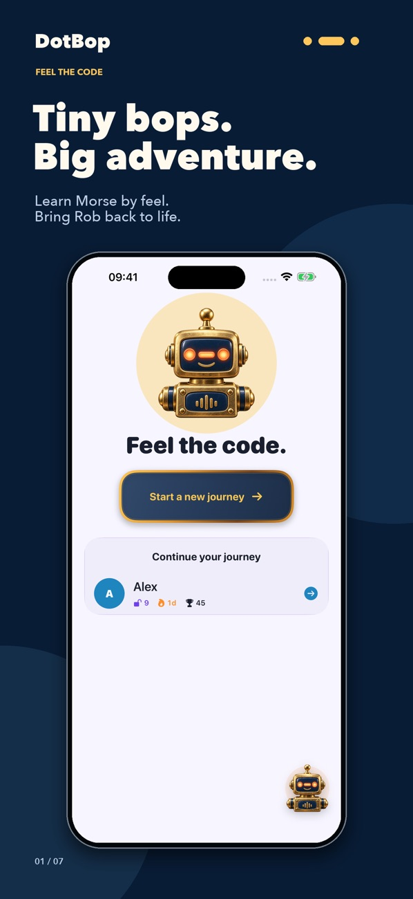
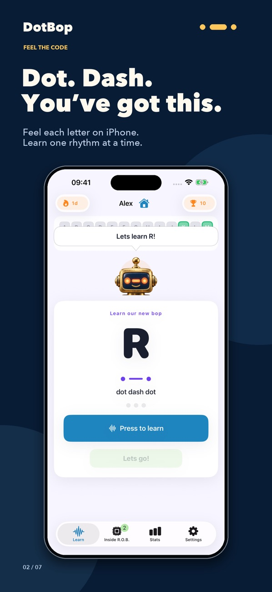
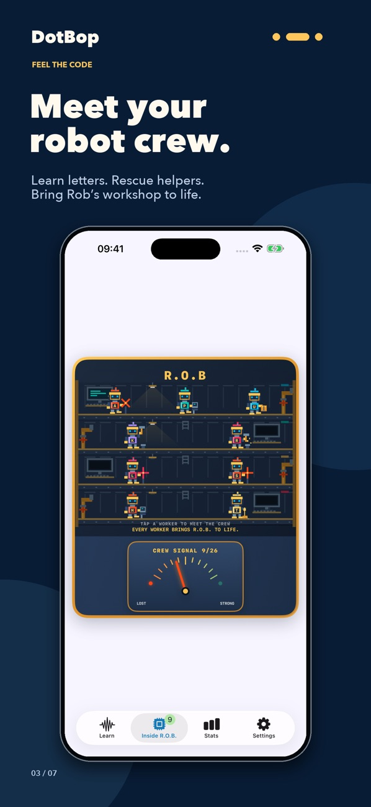
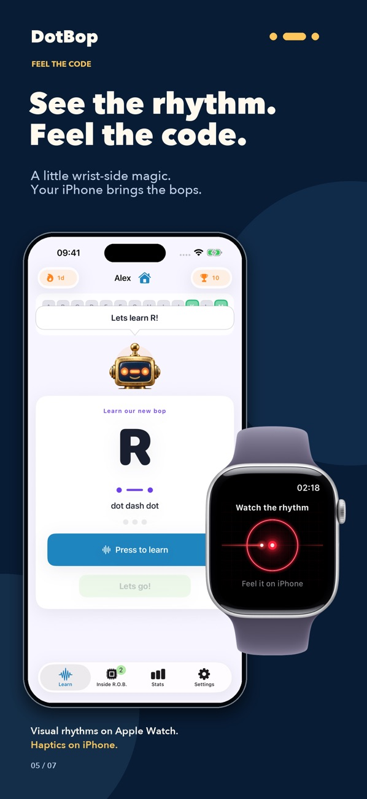

Build your skills gradually
Start with a small set of letters, replay their signals, and practise identifying them. Revisit familiar letters whenever you need to.
Discover Morse code through a robot rescue adventure. Practise the rhythms of dots and dashes with R.O.B., and bring his crew back together as you learn.
Free to download, with an optional DotBop Pro in-app purchase. See the App Store for current pricing and device requirements.
Start with a small set of letters, replay their signals, and practise identifying them. Revisit familiar letters whenever you need to.
Your practice brings helpers back to R.O.B.’s workshop. Discover their roles and see the workshop fill with activity.
Check your accuracy, learning time, and streaks. Separate learner profiles let people sharing an iPhone keep their own progress.
A connected Apple Watch can play Morse signals through haptics. You can also learn on your iPhone without a Watch.
Explore the lessons, meet the robots, and find your rhythm.




No. You can learn on iPhone. A connected Apple Watch adds haptic Morse playback on your wrist.
Learning progress is saved on your device. You do not need to create an account to use DotBop.
DotBop is free to download and offers an optional Pro purchase. Check the app and its App Store listing for current purchase details.
Email support@cakesquared.co.uk. For a bug report, include your device model, software version, and what happened.
DotBop’s App Store privacy label states that data is not collected. Read the CakeSquared privacy policy for details, including how support correspondence and App Store payments are handled.